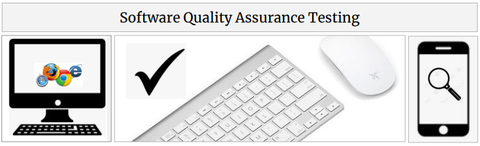
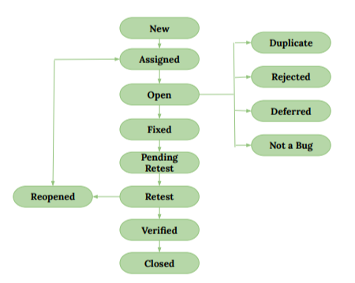
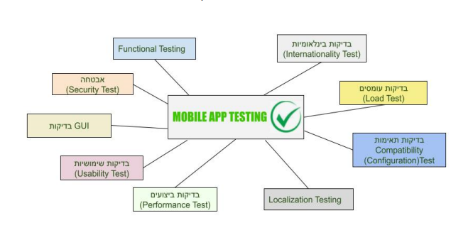
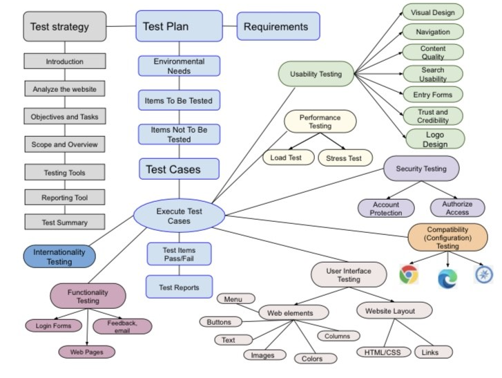

Never rest until the problem is found and solved
Here I will describe my experience in the future projects, for a time, some outlines of theory and practice from the course QAmasters.co.il
This page still in the process...

Some basic concepts from the course
QA Process Stages
- Requirement Analyses
- Test Planing
- Test Design
- Test Execution and Defect Reporting
- ReTesting and Testing
- Release Testing
Software Test Plan (STP)
Is a document detailing the objectives, resources, and processes for a specific test for a software or hardware product,
helps software testers to organize the order and consistency before writing STD.
Also, it helps set out how the software will be checked, what specifically will be tested, and who will be performing the test.
This document usually includes :
- Introduction
- Scope: Date, File Transfer, Security
- Test Strategy: System Test, Performance Test, Security Test, Stress and Load Test, Recovery Test, Documentation Test, Beta, Test, User Test
- Environment Requirements
- Features to be tested
- Features not to be tested
- Item pass/fail criteria
- Resources and Responsibilities
- Risks
- Tools
- Documentation
- Schedule
- Approvals
- I would add a map or block diagram of the testing object here.
Software Test Description or Test Design (STD)
Describes the test preparations, test cases, and test procedures to be used to perform qualification testing of a Computer Software Configuration Item or a software system or subsystem.
Roles responsible for STD:
- Test analyst — determines “WHAT to test?”
- Test designer — determines “HOW to test?”
Summary Test Results STR or Bug Report(STR)
This is a document which is prepared after a Testing is completed. The prime objective of this document is to explain various details and activities about the Testing performed for the Project, describes the detected bugs and issues.
This document usually includes:
- TITLE/NAME
- Author
- Assigned To
- Description
- Steps to Reproduce
- Expected Result
- Actual Result
- Severity and Priority
- Environment and Devices
- Status
- Comments and Attachments
Requirements Testing
Testing API
Types of Testing
Databases, queries
DevOps
Bug Report Life Cycle
The schematic life cycle can be shown on this graphic:

Softaware Testing Methodologies
Waterfall
Agile DevOps
System Testing - Functional and Non-Functional
Testing Techniques and more about WEB Testing
Block schemes, diagrams,maps


Some Tasks from the course
Final Course Web Project
Test Cases and Bug Report Web Project
Final Mobile Project
Mobile Project, Test Plan
Mobile Project, Bug Report
Site Testing Tasks, finding bugs
Tasks Bug Reports
Task - Requirements Analysis , Completing Task
SQL task World , SQL task World
SQL Test , SQL Test Results
Manual QA Test for candidatesSQL Test, College
Test concepts for QA
Bug writing exercise
Types of testing exercise
results exercise (hebrew)
Test Cases example
Exercise writing WEB bugs
in process...